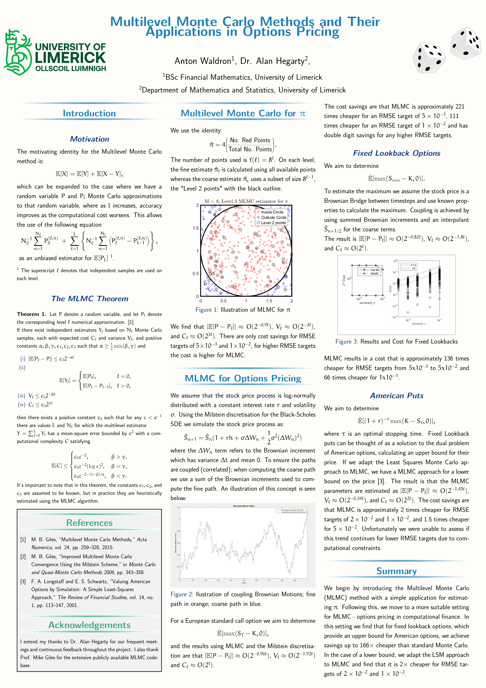

Final-year project
Multilevel Monte Carlo Methods for Option Pricing
An investigation of multilevel Monte Carlo methods as a more computationally efficient approach to pricing European, American, Asian, lookback and digital options.
About the project
In applications, standard Monte Carlo is sometimes referred to as brute-force Monte Carlo, reflecting the substantial computational cost of obtaining accurate estimates. This is particularly relevant in option pricing, where a large number of sample paths may be required. Multilevel Monte Carlo (MLMC) addresses this problem by repeatedly applying the identity \(\mathbb{E}[X] = \mathbb{E}[Y] + \mathbb{E}[X-Y]\). This produces a telescoping decomposition in which estimates calculated on inexpensive, coarse levels are successively corrected using the differences between adjacent levels. An accessible illustration is provided in the poster, where MLMC is used to estimate the constant \(\pi\).
I implemented MLMC in MATLAB and investigated how the method could be adapted to different option types and payoff structures. Milstein discretisation and Brownian bridges were applied to lookback options, producing an efficiency improvement of up to 136 times over standard Monte Carlo at low RMSE targets. I also combined MLMC with Least Squares Monte Carlo for American options, achieving an improvement of up to approximately two times faster convergence. The project exposed me to Monte Carlo methods for option pricing and allowed me to develop an understanding of their adaptability across different settings, notably for American options and under both the Black–Scholes and Heston models.
